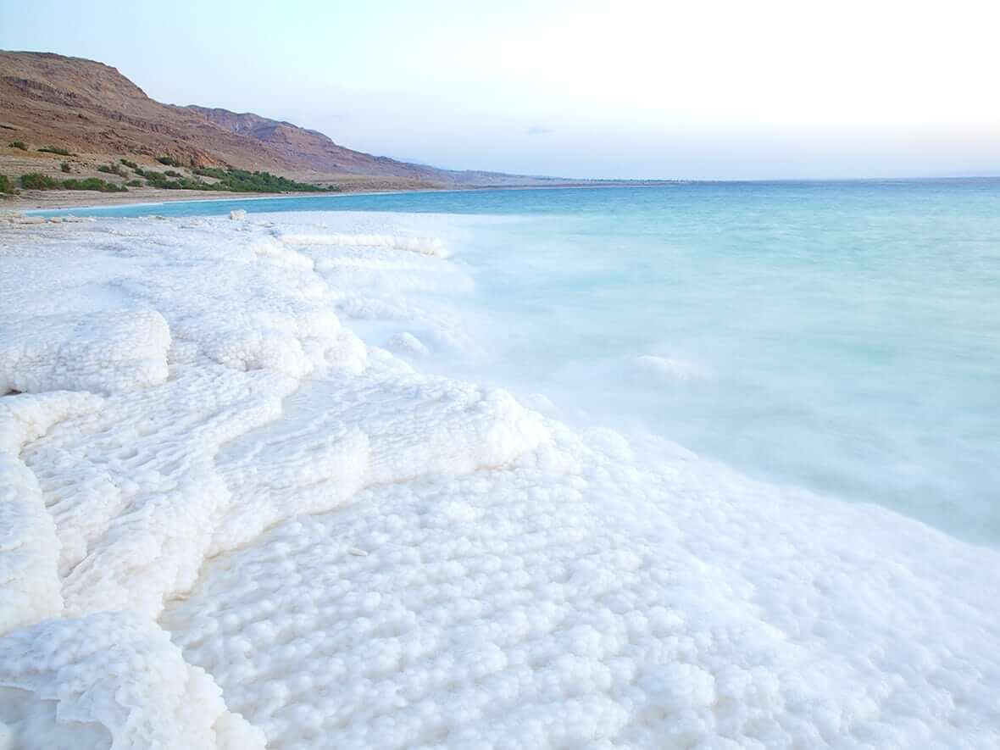

The Dead Sea is a salt lake bordered by Jordan to the east and is the lowest point on Earth at 430 meters below sea level. The Dead Sea is 304 m deep, the deepest hypersaline lake in the world. With 34.2% salinity, it is also one of the world's saltiest bodies of water, though Lake Vanda in Antarctica (35%), Lake Assal in Djibouti (34.8%), Lagoon Garabogazköl in the Caspian Sea (up to 35%) and some hypersaline ponds and lakes of the McMurdo Dry Valleys in Antarctica (such as Don Juan Pond (44%)) have reported higher salinities. It is 9.6 times as salty as the ocean. This salinity makes for a harsh environment in which animals cannot flourish, hence its name. The Dead Sea is 50 kilometers long and 15 kilometers wide at its widest point.
